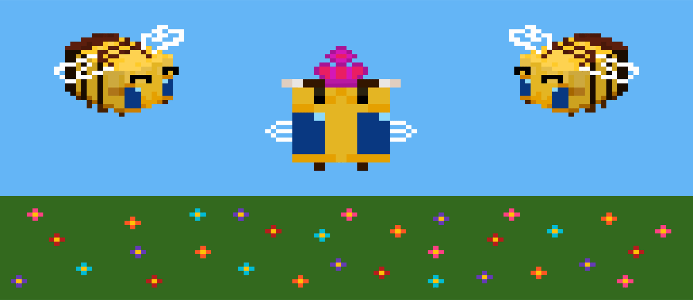
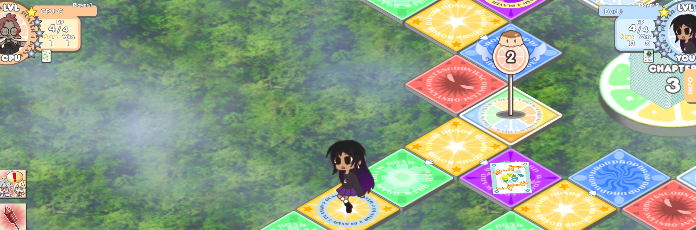

Because my dad plays in a Mariachi and a Peruvian band, I've been surrounded by music ever since I was born. Growing up, I've loved both listening to and learning how to play music. Currently, I know how to play clarinet, violin, and piano, and I am learning how to play the trumpet. While my dad taught me the basics of music himself, joining the elementary school band was what really kick started my passion. During middle school, even though I wasn't in the school band I still grew my skills through private lessons. Then in high school, I joined the marching band as a clarinet, and loved every moment. I've been part of the marching band for all three years, and am about to start my fourth and last year as a member. I also joined AP Music Theory in high school to learn how to write my own music, and did end up passing the exam. Even if it's not part of my future career, music will play an important role in all of my life.
Art Experience
While I'm not as skilled in art as in music, I do still enjoy it from time to time. I started out as a child simply doodling whatever I wanted to. Then in middle school, I began taking multimedia art lessons and began learning the basics of multiple art forms. This includes more traditional forms, such as paint, watercolors, and pastels, and more extravagant medias, such as clay, gold leaf, and even spray paint! During my free time, I began to explore the world of digital art to expand my knowledge even more. Even though I had to teach myself, I did learn about pixel art and raster art and enjoy them very much. Nowadays, I mainly create art to share with my other artist friends for fun. However, art will always be a good way for me to relax in life.
Modding Experience
A combination of all my hobbies, modding games brings all my passions together: Music, art, technology, and game design. Ever since I was a kid, I've always loved video games. So when I learned that you could edit some aspects to fit your preferences, I was ecstatic. Though of course I had no professional teachers, the internet had some great how-to guides to show me the basics instructions of modding. I started small, simply changing out music or editing some sprites. As I gained more experience I was able to expand the depth of my mods, up to completely changing characters in the game. I've created mods for multiple games now, such as Puyo Puyo, osu!, and 100% Orange Juice. Sometimes I like to make mods adding my friends and I into the game, while other times I make mods just for myself of other characters/series that I like. Not only is modding fun and rewarding for me, but it gives me practice for the design process of creating games in the future.